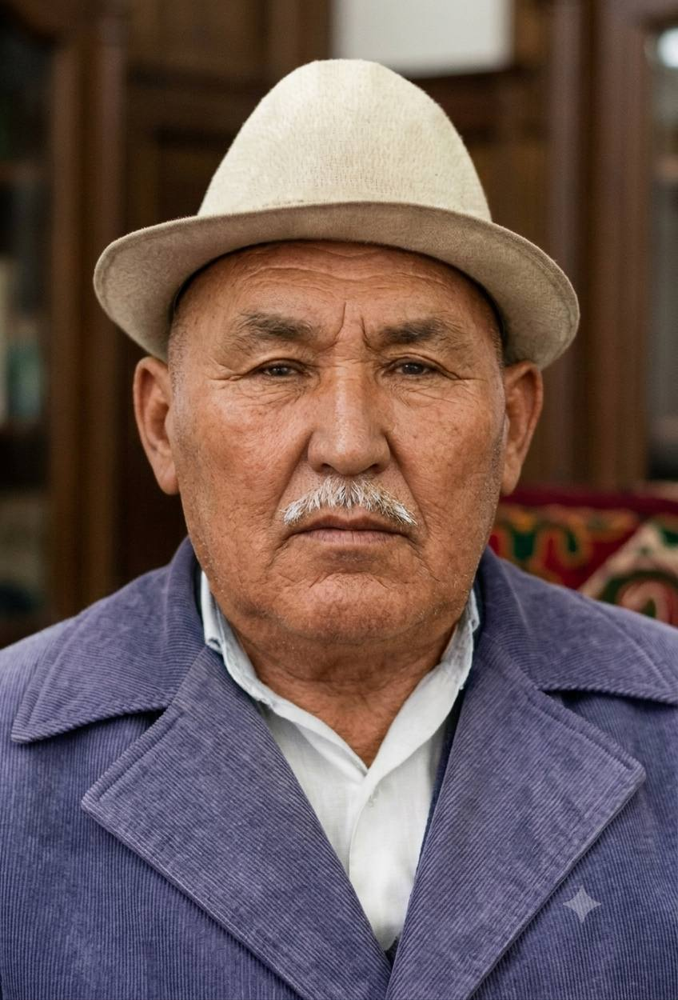

1-ÁWLAD: Úlken Atalarımız

Keljanov Najimatdin
1916 — 1983 (Iyul)
Birinshi Ata
Ómirlik joldası

Najimova Bazargul
1914 — 1995 (May)
Úlken Apa
2-ÁWLAD: Ekinshi Ata hám Ájelerimiz

Keljanov Sharapatdin
1924 — 1995 (Fevral)
Ekinshi Ata
Ómirlik joldası

Sultanyazova Gúlayım
1928 jıl — 9 perzent anası
Shańaraq Kelini (Áje)
3-ÁWLAD: Sharapatdin hám Gúlayımnıń Perzentleri, Kelin hám Kúyew balaları
Gulzar Sharapatdinovna
1949 — tiri
1-Qızı
Kúyew Bala
Seytimbetov Jumamurat
1947 — 2023
Kúyew Bala

Xayratdin Sharapatdinovich
1951 jıl 24 Avgust
2-Perzenti / Ulı
Ómirlik joldası

Awezova Asiya Qallievna
1959 jıl 14 May
Shańaraq Kelini

Ziyratdin Sharapatdinovich
1954 jıl
3-Ulı
Ómirlik joldası

Qizlargul
Belgisiz
Shańaraq Kelini
Gulsanem Sharapatdinovna
Belgisiz
4-Qızı
Kúyew Bala
Sheripbay Saburovich
Belgisiz
Kúyew Bala
Shaxsanem Sharapatdinovna
Belgisiz
5-Qızı
Karamatdin Sharapatdinovich
Belgisiz
6-Ulı
Ómirlik joldası
Anar
Belgisiz
Shańaraq Kelini
Nuratdin Sharapatdinovich
Belgisiz
7-Ulı
Ómirlik joldası
Aysha
Belgisiz
Shańaraq Kelini
Genjexan Sharapatdinovna
Belgisiz
8-Qızı
Gulbaxar Sharapatdinovna
Belgisiz
9-Qızı
Kúyew Bala
Baxtiyar Bayjanovich
Belgisiz
Kúyew Bala
4-ÁWLAD: Xayratdin hám Asiyanıń ul-qızları, Kelin hám Kúyewleri
Shamshetdin
1980 jıl 10 Iyun
1-Ulı
Ómirlik joldası
Gulmiyra
1981 jıl 11 Fevral
Kelin
Baxtiyar
1983 jıl 8 Yanvar
2-Ulı
Ómirlik joldası
Gulchexra
1983 jıl 4 Noyabr
Kelin
Tursinay
29 Aprel
3-Qızı
Kúyew Bala
Daryabay
1985 jıl 10 Fevral
Kúyew Bala
Quralay
1988 jıl 17 Mart
4-Qızı
Kúyew Bala
Salamatdin
1986 jıl 4 Oktyabr
Kúyew Bala

Nurmuxammeddin
1990 jıl 20 May
5-Ulı (Boydoq)
Nurlibek
2012 jıl 1 Dekabr
Kenje Ulı
Gulziyra
1991 jıl 30 Noyabr
6-Qızı
Kúyew Bala
Erkinbay
1991 jıl 13 Oktyabr
Kúyew Bala
5-ÁWLAD: Aqlıqlar (Uldan tuwılǵan perzentler)
Dilfayruz
2006 jıl 28 Yanvar
Shamshetdin Qızı
Dilshoda
2007 jıl 22 Noyabr
Shamshetdin Qızı
Maxinur
2010 jıl 30 May
Shamshetdin Qızı
Botirbek
2013 jıl 30 Dekabr
Shamshetdin Ulı
Mubina
2021 jıl 25 Dekabr
Shamshetdin Qızı
Ismoil
2021 jıl 21 Aprel
Baxtiyar Ulı
Munira
2022 jıl 16 Iyul
Baxtiyar Qızı
Ibrahim
2025 jıl 25 Iyul
Baxtiyar Ulı
5-ÁWLAD: Naatla / Aqlıqlar (Qız tárepten tuwılǵanlar)
Jasmina
2022 jıl 21 Aprel
Tursinay Qızı
Ruslan
2015 jıl 20 Yanvar
Quralay Ulı
Ranogul
2018 jıl 17 Mart
Quralay Qızı
Aydos
2020 jıl 11 Iyun
Gulziyra Ulı